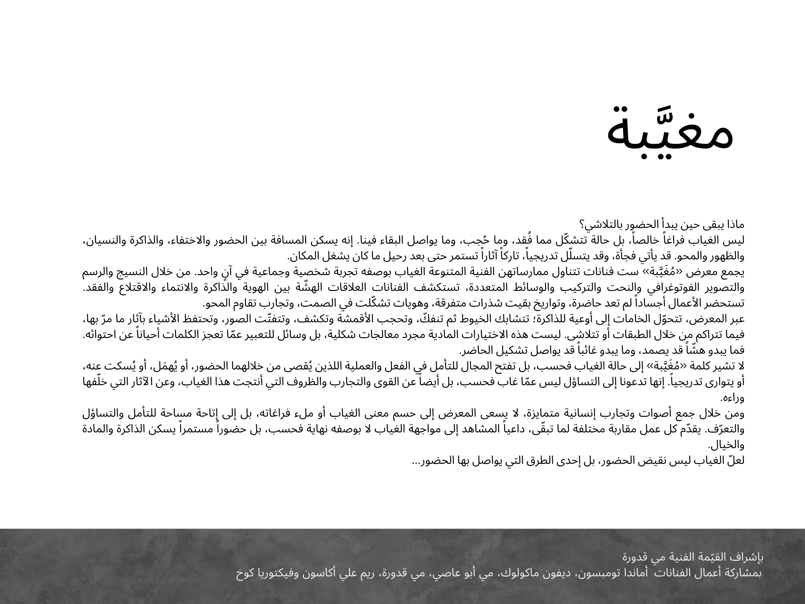

ماذا يبقى حين يبدأ الحضور بالتلاشي؟
ليس الغياب فراغاً خالصاً، بل حالة تتشكّل مما فُقد، وما حُجب، وما يواصل البقاء فينا. إنه يسكن المسافة بين الحضور والاختفاء، والذاكرة والنسيان، والظهور والمحو. قد يأتي فجأة، وقد يتسلّل تدريجياً، تاركاً آثاراً تستمر حتى بعد رحيل ما كان يشغل المكان.
يجمع معرض «مُغيَّبة» ست فنانات تتناول ممارساتهن الفنية المتنوعة الغياب بوصفه تجربة شخصية وجماعية في آنٍ واحد. من خلال النسيج والرسم والتصوير الفوتوغرافي والنحت والتركيب والوسائط المتعددة، تستكشف الفنانات العلاقات الهشّة بين الهوية والذاكرة والانتماء والاقتلاع والفقد.
تستحضر الأعمال أجساداً لم تعد حاضرة، وتواريخ بقيت شذرات متفرقة، وهويات تشكّلت في الصمت، وتجارب تقاوم المحو.
عبر المعرض، تتحوّل الخامات إلى أوعية للذاكرة؛ تتشابك الخيوط ثم تنفكّ، وتحجب الأقمشة وتكشف، وتتفتّت الصور، وتحتفظ الأشياء بآثار ما مرّ بها، فيما تتراكم من خلال الطبقات أو تتلاشى. ليست هذه الاختيارات المادية مجرد معالجات شكلية، بل وسائل للتعبير عمّا تعجز الكلمات أحياناً عن احتوائه.
فما يبدو هشّاً قد يصمد، وما يبدو غائباً قد يواصل تشكيل الحاضر.
لا تشير كلمة «مُغيَّبة» إلى حالة الغياب فحسب، بل تفتح المجال للتأمل في الفعل والعملية اللذين يُقصى من خلالهما الحضور، أو يُهمَل، أو يُسكت عنه، أو يتوارى تدريجياً. إنها تدعونا إلى التساؤل ليس عمّا غاب فحسب، بل أيضاً عن القوى والتجارب والظروف التي أنتجت هذا الغياب، وعن الآثار التي خلّفها وراءه.
ومن خلال جمع أصوات وتجارب إنسانية متمايزة، لا يسعى المعرض إلى حسم معنى الغياب أو ملء فراغاته، بل إلى إتاحة مساحة للتأمل والتساؤل والتعرّف. يقدّم كل عمل مقاربة مختلفة لما تبقّى، داعياً المشاهد إلى مواجهة الغياب لا بوصفه نهاية فحسب، بل حضوراً مستمراً يسكن الذاكرة والمادة والخيال.
لعلّ الغياب ليس نقيض الحضور، بل إحدى الطرق التي يواصل بها الحضور...
بإشراف القيّمة الفنية مي قدورة
بمشاركة أعمال الفنانات: أماندا تومبسون، ديفون ماكولوك، مي أبو عاصي، مي قدورة، ريم علي أكاسون وفيكتوريا كوخ.
